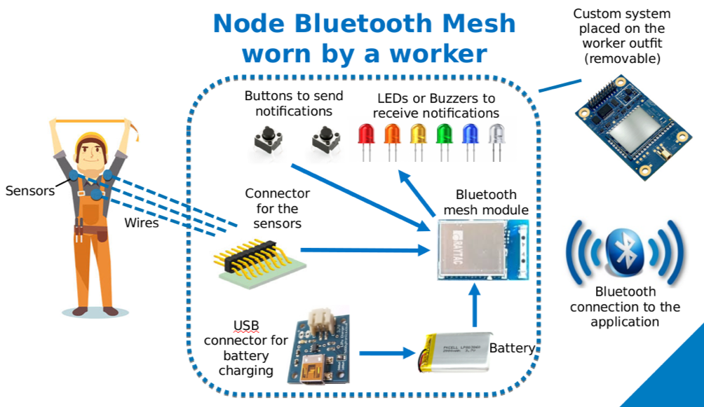
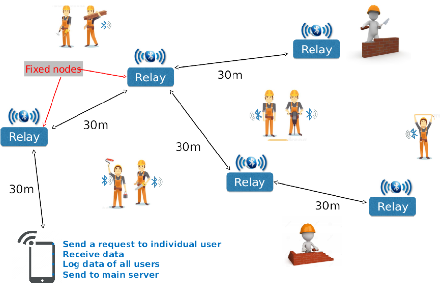

<div fxLayoutAlign="center center">
  <mat-card >
      <mat-card-title style="text-align:center"><h2> Overview </h2></mat-card-title>
      <mat-card-subtitle style="text-align:center">
        <mat-icon>code</mat-icon>
        <span>Version</span> {{version}} <br><br>
      </mat-card-subtitle>
      <mat-card-content>
      <div style="text-align: justify">
        <span >
          Dehydration and heat induced illnesses prevention is the problematic this project is answering to. The overall objective is to monitor the health status of a large group of individuals and determine whether actions such as drinking, resting or cooling down need to be taken. We developped a system that can measure data such as temperature and humidity of hundreds of persons and communicate to a central computer acting as a supervisor. In case of alarming health status of one of them, we can either automatically send a message to the concerned person such as rest needed, or drink needed, or let the person supervising to take the decision. <br><br>
          
          In a more technical aspect, each of the individual is wearing a small electronic device (node) that contains sensors (temperature, humidity, heart rate, and so on) and a Bluetooth transceiver to send data to the central computer. The later will analyze the information collected and transmit warning message to the node, either automatically or at the command of the human supervisor operating the computer. <br><br>
          
           <br><br> 
          
          The novelty lie in the fact that all nodes are operating in a mesh configuration where they can communicate altogether to transmit information at an unprecedented range with a relatively low power. Most of the system nowadays uses smartphones that would transmit data over the 4G network. It does increase the cost of the system (smartphone) and limit the autonomy of the system to usually one day. Our system however can be produced for a fraction of the price and run for several week due to the use of Bluetooth module rather than a phone and the 4G power hungry protocol. <br><br>
          
           <br><br>
          
          Our system use a central computer to send the information of the hundreds of node to a distant and secured server through the Internet and access the data on a website with a secured login. That way several managers could see the health status of their employees from their laptop or phone/tablet and take the necessary health related decision.
        </span>
      </div>
    </mat-card-content>
  </mat-card>
</div>
